BOM Versioning
“I’d like to mention that the new BOM version control is a welcome addition. The BOM version control allows us to remove a process outside Nulogy and streamline it within the system."
- EVP of one of our customers
Impact & results
- 100% of our customers using this feature
- Within the first month of launching, we had 4,376 versions finalized by our top 10 customers using the feature
- Within the first month of launch, an average of 257 versions was being created per day
Problem
Prior to this project, there was only one Bill of Materials per Item in our application. This caused a variety of problems when it came to our customers actually using these Items in production:
- A finished good’s contents can change slightly over time. When this change happens and the BOM is updated, the changes are propagated everywhere, meaning current production, as well as historical data records are affected (i.e. consumption, reconciliation)
- A finished good sometimes can be built in different ways, meaning they require slightly different BOMs, but the final product is actually the same finished good. Currently customers are using workarounds like substitutes and optionals to manage this, but this is uncontrolled and prone to errors.
- Some facilities have machines on their lines. Depending on the machine speeds, production rates will vary. In this case, the same Item Master information will not provide accurate production metrics.
We needed a way to control these changes in the application to ensure production could run smoothly. That’s why Nulogy decided to implement BOM Versioning.
+ view glossary
- hide glossary
A Bill of Materials (BOM) is a list of the raw materials, sub-assemblies, intermediate assemblies, sub-components, parts, and the quantities of each needed to manufacture a finished good (Item). In addition to BOM information, each Item contains information on weight, cost, production rates, assembly steps, and more. This information is stored in what we call the Item Master for each Item.
A BOM is specified on each Item, and that Item is tied to a production order, known as Projects in our solution. The BOM is used to determine quantities for reservations for components that are in stock, and orders for components that are not in stock. When it comes time to actually produce the finished good, the BOM is used to determine the ratio of materials that goes into the good.
Solution
Bill of Materials Versioning allow customers to run multiple projects for the same finished good Item simultaneously by using different versions, providing a controlled way to make and manage changes to the BOM.
Create a separate space for versioned information
Each component of the Item Master is divided into its own section, to separate versioned information from non-versioned components.


Provide a space for changes
By default, users are taken to the draft version of the Bill of Materials when they navigate to the section, where they can easily make changes without affecting production in progress.

Make finalizing versions flexible
A version name can be specified, or users can finalize using the default name provided.
Make it easy to see and find versions
Versions are in reverse chronological order, so users can easily find the most recent version.

My role
I was the sole product designer a team comprising of a Product Manager, 4 Developers, and 1 Agile Tester.
Tools

Approach
Understand the current state
BOM Versioning has been a highly requested feature by many of our existing customers for a long time. It was prioritized because many of our more regulated customers (GxP) required a better way to control changes to the BOM in order to continue using our solution. As a result, we spent a lot of time interviewing our customers to understand how they were currently using the Item Master and Projects in production. Once development began, we set up constant touchpoints with our customers to demo the feature as it was being built.
Phase 1: Empathize & Define
Who are the key players and what are they trying to accomplish?
I interviewed 3 different customers to understand their current workflow, and also gathered information from internal resources; our consultants who implement and train users on the software have invaluable information about what users are trying to do.
+ view questions
- hide questions
- Can you walk through how your current process is like from when you receive an order to when that order becomes final and production is ready to start?
- When is the order considered final?
- How do you ensure its final? For example, are there signatures required on the document?
- What information must remain consistent when the order is final? For example, the BOM or any Project information?
- What happens if the information must change when production has started? What is this process like?
- What happens when the information changes for a new order? Do you create a new set of paperwork that needs to be signed off?
Using responses from the interviews, I generated a persona for the Production Planner by narrowing down the findings into three categories using the job-to-be-done, pains, and gains value proposition.

How can we help our users accomplish their goals?
After defining the Production Planner persona, I created a workflow to capture how the Production Planner would flow through the system with versioning introduced.
Phase 2: Ideate
Identify what requires redesign
Before we were able to even approach versioning on the Item Master, we looked at the Item Master in its existing state. There was a lack of thought behind the organization of information that trying to introduce versioning without a redesign of the Item Master would crowd the page even more. The old Item Master is depicted below:

One thing to note here is that the Item Master redesign was scope that we added to the BOM versioning project just because of the usability issues it would cause by trying to introduce versioning without redesigning the page. For that reason, and because we were working with dated front end frameworks, I was very limited in the amount of interaction changes I was able to make about how the page worked already. Many of the changes I made to the Item Master were organizational, without changing too much how to edit and manage the data on the page.
One thing to note here is that the Item Master redesign was scope that we added to the BOM versioning project just because of the usability issues it would cause by trying to introduce versioning without redesigning the page. For that reason, and because we were working with dated front end frameworks, I was very limited in the amount of interaction changes I was able to make about how the page worked already. Many of the changes I made to the Item Master were organizational, without changing too much how to edit and manage the data on the page.
Card sorting activity
To understand how the Item Master information should be organized, I ran a card sorting activity with 2 of our implementation consultants, and a global support representative - all of whom have extensive experience both setting up and training our customers on the Item Master.
Participant 1: Rob (Implementation Consultant)


Participant 2: Melissa (Global Support Representative)


Participant 3: Luis (Implementation Consultant)


Using the results from the card sorting activity, I ended up with a breakdown depicted on the right hand side - the original organization is indicated on the left:

However, our requirements changed partway through the design process – users needed to specify multiple line items on a Purchase Order, instead of just one. I opted to move the information to a new page, to allow for more real estate to manage this information.

Actionable Language
Capturing the status of a Purchase Order was key for users to understand which party needed to action on a Purchase Order. We initially approached the naming of statuses from by describing the actions taken on the Purchase Order, using terms like “modified by supplier” and “modified by brand”.

However, after validation with the Brand Planners, we discovered the naming was not resonating with them. Planners have an endless to-do list and are therefore constantly under pressure to ensure deadlines are met. The passive language used did not convey urgency to act on the Purchase Orders. We refined the language to encourage action and rather tell the planners what needed to be done. We settled on the following statuses listed in order of highest priority first: Requires Response, Pending Response, Accepted, Canceled.
Phase 3: Prototype and Test
Blanket “Reject” button
To test the overall usability with suppliers, I designed a task walkthrough that simulated the supplier receiving a Purchase Order from the brand, and asked the supplier to complete a series of tasks to successfully respond to the Purchase Order. One of the most notable findings occurred in 80% of the tests. The suppliers would immediately go to reject the Purchase Order, instead of responding to the Purchase Order and making proposals.

Upon further investigation, I discovered that suppliers will almost never reject a Purchase Order, instead working with the Brand to agree on terms. I removed the reject button in later tests and noticed that the success rate for the suppliers to find and make proposals jumped to 100%.
Cancel vs. Delete
If the brand changes their mind about a line item that has already been shared with a supplier, they can cancel the line item on the Purchase Order. Cancelled line items are not technically “deleted” because they are still displayed for historical purposes on the Purchase Order. Since “cancel” is not an action that can be easily represented in an icon, I tested the use of the trash icon, a “cancel” type icon, or just the word “cancel”. I wanted to see if the users’ expectations aligned with the intended behaviour. I was exploring the use of an icon to save space for in-line behaviour.
The issue with the trash icon is users thought it would remove the line item from the page completely. The cancel icon caused confusion because the icon was too ambiguous. Using just the “cancel” word resulted in successful task completion and understanding every time, which made my choice very clear.